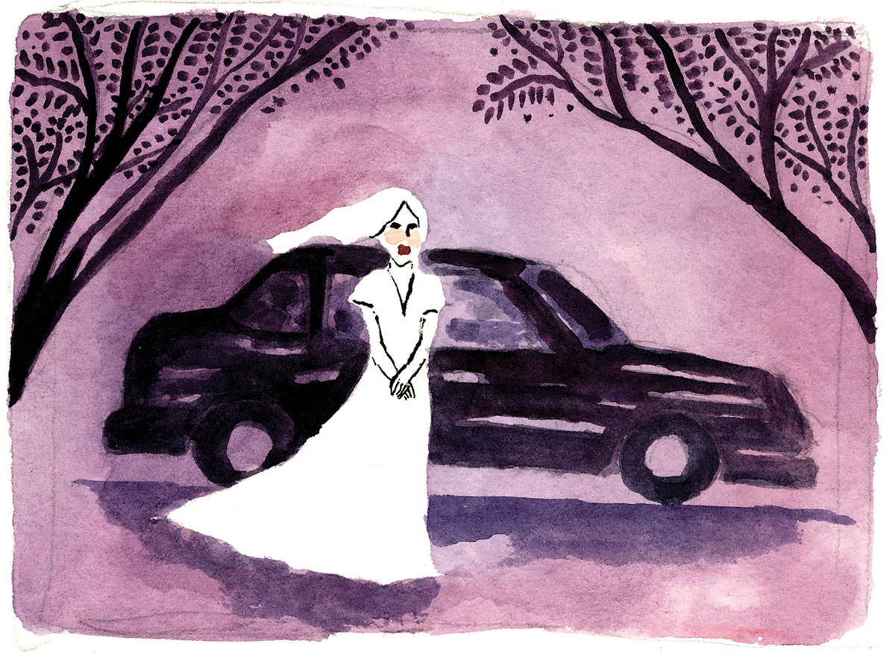
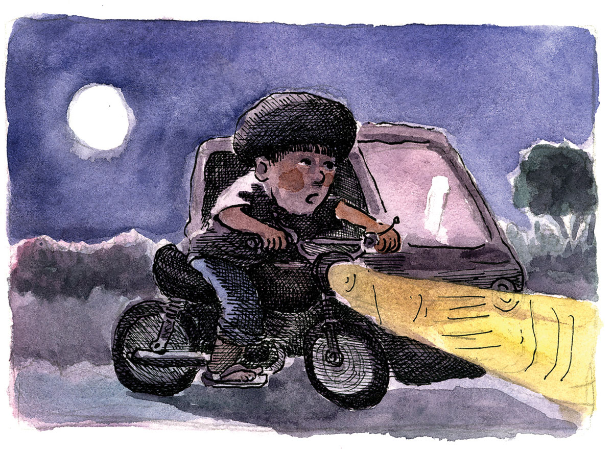

Gikaibgan sa Dili Ingon Nato
Dunay dili ingon nato kun engkanto nga maibog sa mga tawo nga kalibutanon. May babaye nga kaibgan sa lalake nga engkanto. Sama usab nga may lalake nga kaibgan sa engkantada. Dunay nag-asoy nga panahon sa atong katigulangan nga may babaye nga gikapuyo og engkanto. Magpakita lamang ang iyang gikapuyo nga engkanto panahon sa kagabhion. Nanganak sila og bata nga labihang kaputi ang pamanit ug bulagaw ang buhok. Kon maadlaw magdiyong ang iyang mata ug dili makaharong sa kahayag. Matod pa sa babaye nga gwapo kuno ang iyang gikapuyo apan dili makakita ang ubang sakop sa panimalay. Hinuon ilang madungog ang tingog kon managsultianay ang managtiayon.
Kining mosunod nga sugilanon gibase sa sugid ni Felix Suerte bahin sa kahibulongang hitabo sa iyang anak nga si Liberato (gianggaan og Ebyot) nga lumad nga nagpuyo sa lungsod sa Badian, sakop sa lalawigan sa Sugbo. Drayber lamang sa traysikol si Ebyot, busa nag-ilaid sa kalisud ang ilang panginabuhi. Ang batan-on niyang asawa nga si Siyaning, mahiligon sa pangarte ug buot mosundog sa mga binag-ong urog. Wala siya malipay sa iyang kaminyoon. Ang mga ginikanan niya maoy dakong gusto kang Ebyot nga mahimong umagad kay kuno buotan. Ugaling lang kay dili makahatag sa kapritso ni Siyaning.
Niadtong liwas sa pangilin sa ilang lungsod, nilayas si Siyaning. Niuban sa laing lalake nga taga-dakbayan nga iyang gikaila sa baylehan. Aron dili maladhan sa kaguol, gilingaw ni Ebyot ang iyang kaugalingon sa pagpamasahero hangtod sa lawom nga kagabhion. Niadtong usa ka higayon nga mograhe si Ebyot, may babaye nga maanyag nga nagpahatod sa dapit duol sa dakong punoan sa balete. Nahibulong si Ebyot kay walay balay niadtong dapita, apan wala na lang siya mangahas sa pagpangutana. Gidaog siya sa kataha.
Milabay ang usa ka semana sa dayong mograhe si Ebyot, nihangyo na usab kadtong babaye nga magpahatod didto sa Barangay Tubod kay dunay bayle atol sa kapistahan didto. Nibalibad unta si Ebyot kay nasayod siya nga dunay taas nga tungason nga ilang agian ug wala sa kondisyon ang iyang sakyanan. Apan gidunolan siya og tibuok lima ka gatos ka pesos. Nagduha-duha sa pagdawat si Ebyot. Mapugsanon kaayo ang babaye ug gidawat na lang ang gitanyag. Igo lang nga gihatod sa Tubod ang babaye ug mipauli dayon si Ebyot.
Milabay na usab ang laing semana ug niadtong higayona human mograhe ug nanihapon unya dayong katulog tungod sa kalapoy sa lawas. Lapas alas dose and takna sa kagabhion, nahigmata si Ebyot kay dunay nanitsit. Sa pagdungaw sa bintana, tataw niyang nakita ang sinaw kaayong itom nga awto. Hayag usab ang bulan. Migawas sa awto ang babaye nga suki ni Ebyot, ug nagpangamay. Nanaog ang gikamay ug gisugat ang babaye.
“Pag-ilis kay magpauban ko nimo didto sa Talayong kay dunay bayle didto,” matod pa sa babaye.
“Ha? Aw….Oo, hulat lang kay mag-ilis ko.” Gikan ni Ebyot nga wala makabalibad.
Si Iyo Felix, ang amahan ni Ebyot, nahibulong nga dunay gikasulti ang anak. Milili sa gamay nga lungag sa bungbong, apan wala siyay nakitang laing tawo. Nagtuo siya nga nahubog ang iyang anak. Kinaiya niini nga magtabi nga siyang usa kon makainom. Mibalik sa pagkatulog si Iyo Felix ug wala nanumbaling sa gibuhat sa iyang anak.
Nakailis na si Ebyot ug misakay sa awto. Nasingo niya ang labing kahumot sa babaye. Wala masabti ni Ebyot and iyang gibati niadtong higayona. Nanginit ang iyang kalawasan. Nahinumdom siya nga sama niadto ang iyang gibati sa unang romansa niya sa iyang asawa. Unya namatikdan niya nga ang dalan nga ilang gisubay, dili padulong sa Talayong. Dako ang iyang kahibulong kay ang awto didto moagi sa umahan ni Ingko Buagas ug kadtong dapita daghang paril nga bato ug walay dakong dalan nga maagian og awto. Nagdugang ang iyang gibating kakulba. Sa pag-abot nila tungod sa dakong punoan sa kahoy nga tugas, kalit nga miugsad ang sakyanan ingon sa nakaagi og lawom ng libaong. Napugwat si Ebyot.
“Hesus Maria y Jose,” Nakatuwaw si Ebyot dungan sa pagpanguros. Dihadiha nawala ang awto ingon man ang maong babaye. Maoy iyang naamgohan nga nasalip-it siya sa sanga sa tugas. Misuway siya og kanaog. Bisan giunsa niya og panglimbasog, dili gayud siya makahimo. Misinggit siya ug nangayo og pakitabang. Maayo gani kay nakadungog si Iyo Felix sa tingog ni Ebyot. Gisubay sa amahan ang gigikanan sa tingog. Didto siya mosangko sa dakong punoan sa tugas. Pinaagi sa flashlight, iyang nakita si Ebyot nga nasalip-it sa sanga.
“Nganong miabot ka diha, Ebyot?” sukot sa amahan.
“Unya na kita mag-asoy bahin niini,” tubag ni Ebyot. “Tabangi una ko pagkanaog.”
“Paghulat una diha kay magkuha ko og hagdan ug magpakitabang ko sa atong mga silingan.”
Sukad niadtong hitaboa, dili na magpagabii si Ebyot sa pagpamasahero bisan bation usahay niya ang kahidlaw nga makig-uban niadtong maanyag nga babaye nga iyang naseguro nga dili ingon nato. Wala na usab magpakita ang maong babaye. Sa diha nga nasayran sa ilang mga silingan sa gidangatan ni Ebyot, dunay mitumaw nga asoy sa lainlaing kasinatian bahin sa engkanto.
Sama niadtong bata nga gitagoan sa engkanto. Lagmit nga gikaibgan usab kadtong bataa, napalgan ang bata nga nawala apan nasalip-it sa kal-ang sa busaog sa balay. Dunay misugilon usab nga mosulod kuno ang engkanto sa lawas sa tawo. Ang uban miingon nga ang engkanto manghadlok og tawo ug pakit-on kini sa makalilisang nga dagway hangtod nga malisoan sa maayong pangisip.